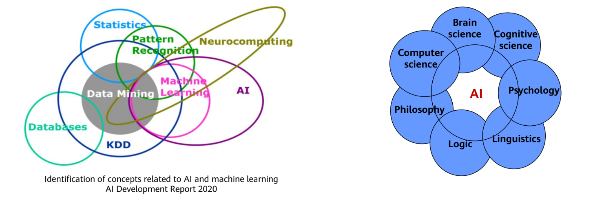
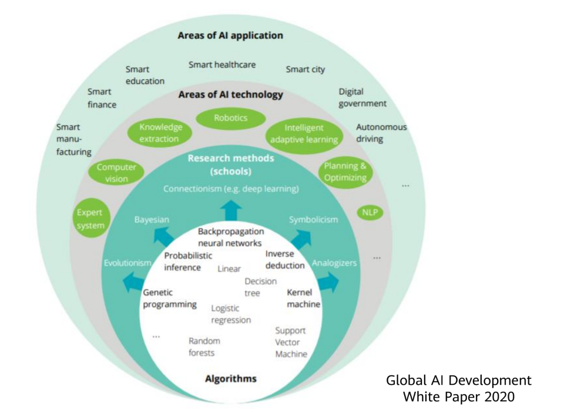
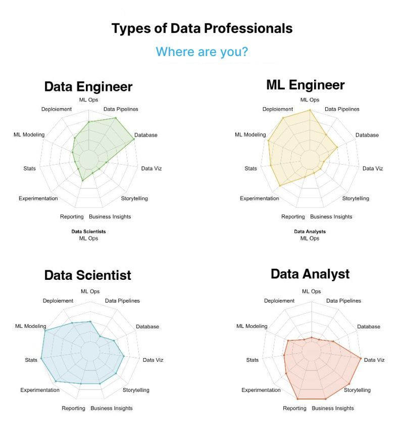
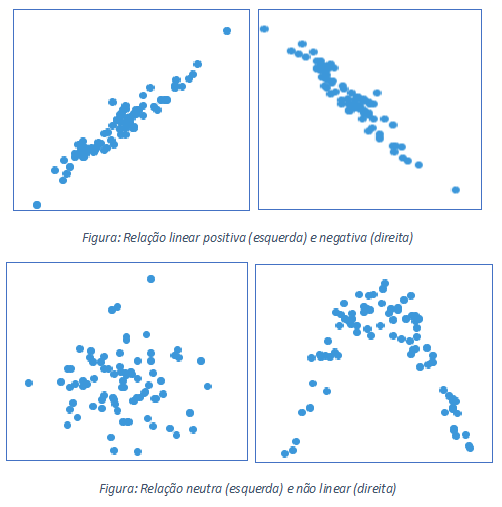
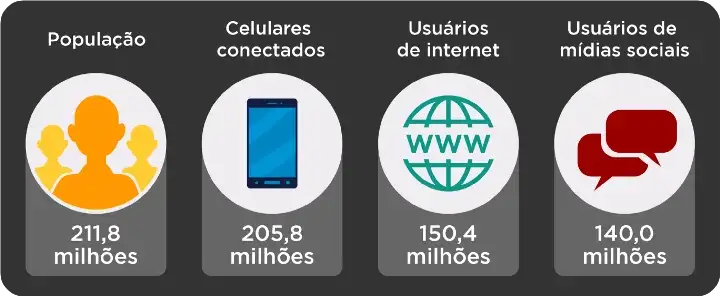
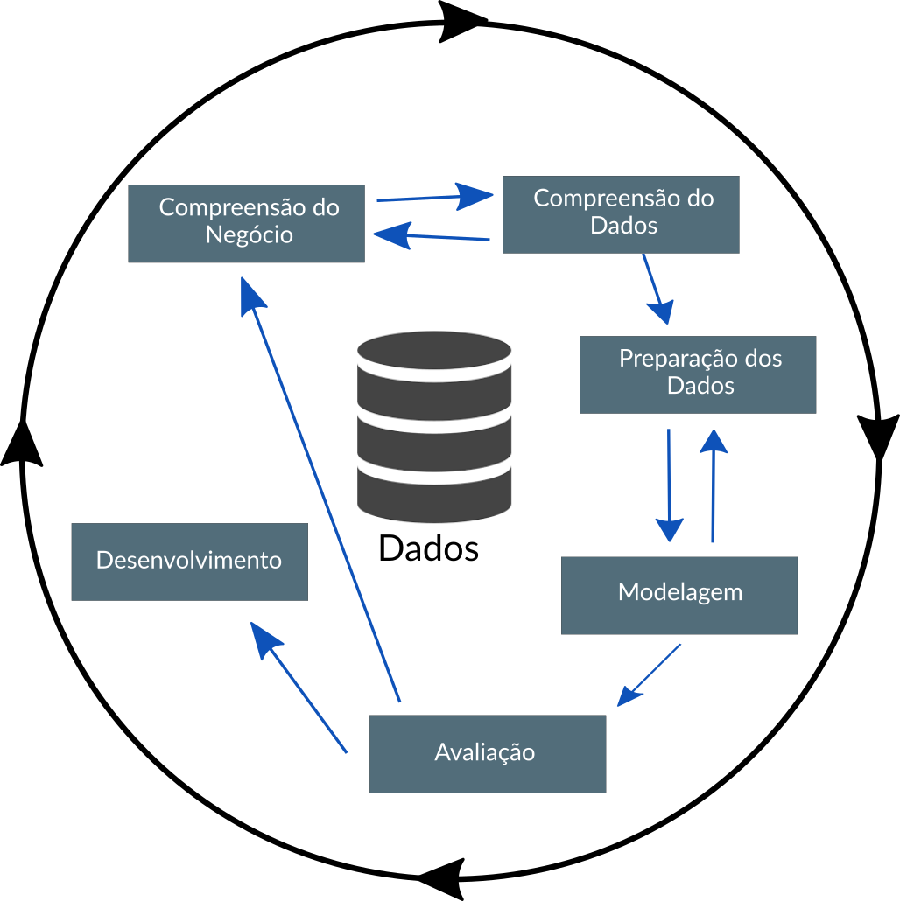

Estatística, Machine Learning e Inteligência Artificial:
Uma visão sobre estatístico no mercado de trabalho
Jodavid Ferreira
UFPB - PPGMDS | HartB Group
Tópicos abordados
- Atuação de Estatístico como cientista de dados
- Algumas exemplos de possíveis soluções com dados
- O que esperar do mercado de trabalho?
Inteligência Artificial

Inteligência Artificial

Atuais áreas existentes
Atualmente no mercado de trabalho, nomenclaturas estão surgindo para diferenciar as áreas que trabalham com dados. As mais frequentes atualmente são:
- Engenheiro de Machine Learning;

Atuais áreas existentes
Atualmente no mercado de trabalho, nomenclaturas estão surgindo para diferenciar as áreas que trabalham com dados. As mais frequentes atualmente são:
- Engenheiro de Machine Learning;
Era dos dados
Graças ao avanço de tecnologias computacionais a
nível de hardware e software
- coletar,
- armazenar e
- analisar dados (e grandes volumes de dados)
através das técnicas estatísticas e computacionais ganharam uma âncora em negócios nos últimos anos;

Era dos dados
Atualmente, o data science é sinônimo ou está relacionando a termos como:
- análise de dados,
- business analytics,
- pesquisa operacional,
- business intelligence,
- competitive intelligence,
- modelagem e extração de conhecimento,
- entre outros campos de pesquisa e atuação
mas isso é apenas um novo giro ou nomenclatura em áreas que existem a muito tempo.
Cenário Atual - Mundo
Atualmente, existem aproximadamente 50 bilhões de dispositivos conectados à internet;
7.4 bilhões de pessoas vivendo em nosso planeta.
Essas conexões entre pessoas e dispositivos geram uma massa de dados estimada em 5 zettabytes.
Para se ter uma ideia do que isso significa, vamos entender rapidamente a estrutura de armazenamento de dados com exemplos que temos no cotidiano.

Cenário Atual - Mundo

- bit (b)
- byte (B)
- kilobyte (KB)
- megabyte (MB)
- gigabyte (GB)
- terabyte (TB)
- petabyte (PB)
- exabyte (EB)
- zettabyte (ZB)
- ‘yottabyte’ (YB)
Este último, equivale a ’todas as centrais
de dados, discos rígidos, pendrives e servidores de todo o mundo’.
Cenário Atual - Brasil
No Brasil, atualmente, 71% da população brasileira está acessando a internet e 66% estão nas mídias sociais, como blogs, Facebook, Twitter, Instagram, SlideShare, Youtube, entre outros, realizando algum tipo de interação e assim trocando dados e informações.
Uso digital no Brasil. Fonte: We are social.
Entendimento dos dados
.png)
- Dois entendimentos essências para uma boa análise com dados:
Compreensão da problemática e
Compreensão do contexto
Compreensão da Problemática
- É preciso ter uma visão clara do problema de negócio a ser resolvido.

Compreensão do Contexto

- O que você precisa que ele saiba?
Compreender os dados e descobrir o que pode ser digno de nota ou interessante a destacar para outras pessoas.
Dados Tabulados (Tidy Data)
Mesmo sabendo que existem dados de diferentes formas, quando estamos no contexto de dados estrurados é importante ter essa reflexão em mente!
Reflexão:
Conjuntos de dados arrumados são todos iguais, mas cada conjunto de dados bagunçado, é bagunçado de sua própria maneira.
- Hadley Wickham
Dados Tabulados (Tidy Data)
Há três regras inter-relacionadas que tornam um conjunto de dados arrumados (tidy):
Cada variável deve ter sua própria coluna.
Cada observação deve ter sua própria linha.
Cada valor deve ter sua própria célula.

Mercado de Trabalho
é possível destacar 4 (quatro) pilares fundamentais para se tornar um Estatístico/Cientista de dados com as atuais tecnologias
Possuir “Pensamento e raciocínio lógico matemático”, é extremamente necessário ter a capacidade de realizar operações lógicas, ou seja, a capacidade de organizar dados ou informações para se obter um contexto, um significado e um resultado ou consequência
Mercado de Trabalho
Em seguida, a “Matemática e Estatística” é a base de quase todos os algoritmos aplicados à machine learning e inteligência artificial, no qual os conceitos matemáticos e a estatística é característica intrínseca da ciência de dados.
Mercado de Trabalho
Outro ponto importante é o “Conhecimento em Programação”, a extração de dados exige criatividade devido ao emaranhado de dados possíveis para um determinado fim e exige também formas viáveis para extração. Tanto a criatividade quanto a viabilidade são postas em prática a partir de programas oriundos do conhecimento de linguagens de programação.
Mercado de Trabalho
Por fim, o quarto pilar, podemos dizer que é o “Conhecimento em Banco de dados”, todos os dados disponíveis podem ser armazenados, ainda que temporariamente, para produzirem o conhecimento necessário para determinado fim e praticamente em quase todas as fases do ciclo de vida do dado pertencente à análises estarão relacionadas à bancos de dados, sejam estes relacionais ou não relacionais, que são assuntos que o cientista de dados deve dominar no seu dia a dia.
Mercado de trabalho

- Realizado 10 de outubro de 2022 e 28 de novembro de 2022 e contou com 4.270 respondentes em todo o Brasil
Link para Estudo:
Mercado de trabalho
Principais resultados
- O número de profissionais com formações não relacionadas a tecnologia e exatas passou de 7,7% em 2021 para 13,5% em 2022.
- O modelo preferido de trabalho dos profissionais de dados consolidou-se como o híbrido com dias flexíveis, com 52,6% de preferência, seguido pelo modelo 100% remoto (39,0%). Caso a empresa retorne ao formato totalmente presencial, 74,3% dos profissionais pretendem procurar outra oportunidade, híbrida ou remota. Esse número em 2021 era de 66,3%.
- Dos respondentes da pesquisa, 18,9% reportam ter havido layoffs em sua empresa durante 2022.
Mercado de trabalho

Mercado de trabalho

Mercado de trabalho

Mercado de trabalho

Mercado de trabalho

Para concluir
Os cientistas de dados combinam empreendedorismo com paciência, vontade de construir produtos de dados de forma incremental, capacidade de explorar e capacidade de iterar sobre uma solução. São inerentemente interdisciplinares. Eles podem lidar com todos os aspectos de um problema, desde a coleta inicial de dados e condicionamento de dados até a obtenção de conclusões. Eles podem pensar fora da caixa para encontrar novas maneiras de ver o problema ou trabalhar com problemas definidos de maneira muito ampla, eles devem estar prontos para o seguinte questionamento:
‘Aqui estão os dados, o que você pode fazer com eles?’
Mike Loukides
vice-presidente de estratégia de conteúdo da O’Reilly Media
Referências
Link para Texto sobre Privacidade e Proteção de dados:
- https://contatostepps.medium.com/privacidade-e-prote%C3%A7%C3%A3o-de-dados-entenda-a-import%C3%A2ncia-desses-conceitos-na-ind%C3%BAstria-4-0-aa27d5c1f872
Livros:
- R para Data Science
- Data Science do zero
- Estatística e Ciêcia de Dados